Last updated: 2022-09-08
Checks: 6 1
Knit directory: MPSIII_zebrafish_Ymaze/
This reproducible R Markdown analysis was created with workflowr (version 1.6.2). The Checks tab describes the reproducibility checks that were applied when the results were created. The Past versions tab lists the development history.
The R Markdown file has unstaged changes. To know which version of the R Markdown file created these results, you’ll want to first commit it to the Git repo. If you’re still working on the analysis, you can ignore this warning. When you’re finished, you can run wflow_publish to commit the R Markdown file and build the HTML.
Great job! The global environment was empty. Objects defined in the global environment can affect the analysis in your R Markdown file in unknown ways. For reproduciblity it’s best to always run the code in an empty environment.
The command set.seed(20211026) was run prior to running the code in the R Markdown file. Setting a seed ensures that any results that rely on randomness, e.g. subsampling or permutations, are reproducible.
Great job! Recording the operating system, R version, and package versions is critical for reproducibility.
Nice! There were no cached chunks for this analysis, so you can be confident that you successfully produced the results during this run.
Great job! Using relative paths to the files within your workflowr project makes it easier to run your code on other machines.
Great! You are using Git for version control. Tracking code development and connecting the code version to the results is critical for reproducibility.
The results in this page were generated with repository version 42e8e1c. See the Past versions tab to see a history of the changes made to the R Markdown and HTML files.
Note that you need to be careful to ensure that all relevant files for the analysis have been committed to Git prior to generating the results (you can use wflow_publish or wflow_git_commit). workflowr only checks the R Markdown file, but you know if there are other scripts or data files that it depends on. Below is the status of the Git repository when the results were generated:
Ignored files:
Ignored: .DS_Store
Ignored: .Rapp.history
Ignored: .Rhistory
Ignored: .Rproj.user/
Ignored: data/.DS_Store
Ignored: data/metadata/.DS_Store
Ignored: data/processed_data/.DS_Store
Ignored: data/processed_data/hgsnat/.DS_Store
Ignored: data/processed_data/naglu/.DS_Store
Ignored: data/raw_data/.DS_Store
Ignored: data/raw_data/hgsnat/.DS_Store
Ignored: data/raw_data/hgsnat/3m/.DS_Store
Ignored: data/raw_data/naglu/.DS_Store
Ignored: data/raw_data/sgsh/.DS_Store
Ignored: data/raw_data/sgsh/6m/.DS_Store
Unstaged changes:
Modified: analysis/naglu5mLT.Rmd
Note that any generated files, e.g. HTML, png, CSS, etc., are not included in this status report because it is ok for generated content to have uncommitted changes.
These are the previous versions of the repository in which changes were made to the R Markdown (analysis/naglu5mLT.Rmd) and HTML (docs/naglu5mLT.html) files. If you’ve configured a remote Git repository (see ?wflow_git_remote), click on the hyperlinks in the table below to view the files as they were in that past version.
| File | Version | Author | Date | Message |
|---|---|---|---|---|
| Rmd | 42e8e1c | Karissa Barthelson | 2022-08-26 | few more changes naglu homhet LT |
| html | 42e8e1c | Karissa Barthelson | 2022-08-26 | few more changes naglu homhet LT |
| Rmd | 922fb69 | Karissa Barthelson | 2022-08-25 | added naglu in lt analsysi |
| html | 922fb69 | Karissa Barthelson | 2022-08-25 | added naglu in lt analsysi |
library(tidyverse)
library(magrittr)
library(readxl)
library(here)
library(scales)
library(readxl)
library(ggpubr)
library(ggeasy)
library(ggfortify)
library(ggbeeswarm)
library(ggforce)
library(ggrepel)
library(kableExtra)
# stat analysis
library(broom)
library(lme4)
library(performance)
library(car)
library(emmeans)
library(glmmTMB)
library(MASS)
# set the default theme for ggplot as theme_bw
theme_set(theme_bw())
# read in metadata speadsheet. make all the metadata as factors as well
meta <-
read_excel("data/metadata/naglu 5m hom x het in LT metadata.xlsx")%>%
mutate(
fish_id = as.factor(fish_id),
Time = as.factor(`start time`),
Tank = as.factor(Tank),
Sex = as.factor(Sex),
Genotype = factor(Genotype, levels = c("het", "hom"))
)
# prepare the final data object which contains genotype
final_data <-
read_csv("data/processed_data/naglu/5m_LT/final_output.csv") %>%
mutate(fish_id = str_remove(fish_id, pattern = "fish" )) %>%
dplyr::select(-1) %>%
mutate(fish_id = factor(fish_id)) %>%
left_join(meta) %>%
dplyr::filter(Genotype != "NA")
# make an object which converts the final data to long format. for easier plotting in ggplot
final_data_long <- final_data %>%
gather(key = "tetras", value = "Count", # convert to long format
grep("[L|R]{4}",
colnames(.))
)
# also make an object which sums the tetragrams over the hour
final_data_summedoverbins <- final_data %>%
gather(key = "tetras", value = "Count", # convert to long format
grep("[L|R]{4}", # select the columns which contain a L or a R four times
colnames(.))
) %>%
group_by(fish_id, tetras) %>%
mutate(x = sum(Count)) %>% # sum the tetragram counts per fish_id
dplyr::select(colnames(meta), tetras, x) %>%
uniqueIn this analysis, I will analyse the raw data generated for zebrafish arising from a lay from a naglu A603fs hom x het parents in the Zantiks LT Y-maze at 5m of age. The LT units differ from the AD units previously used in our Y-maze work by allowing 8 fish to be recorded at a time, c.f. 2 fish at a time in the AD unit. We have 2 x LT units so the throughput has dramatically increased.
The zebrafish in this analyses were raised across 2 tanks, side-by-side in system 3. The family should contain fish either heterozygous or homozgous for the mutation in a 1:1 ratio. A summary of the fish used in this experiment can be found in the plot below.
meta %>%
group_by(Tank, Genotype) %>%
summarise(n = n()) %>%
ggplot(aes(x = Genotype, y = n, fill = Genotype)) +
geom_col(colour = "black") +
facet_wrap(~Tank) +
scale_fill_viridis_d() +
labs(y = "Number of fish")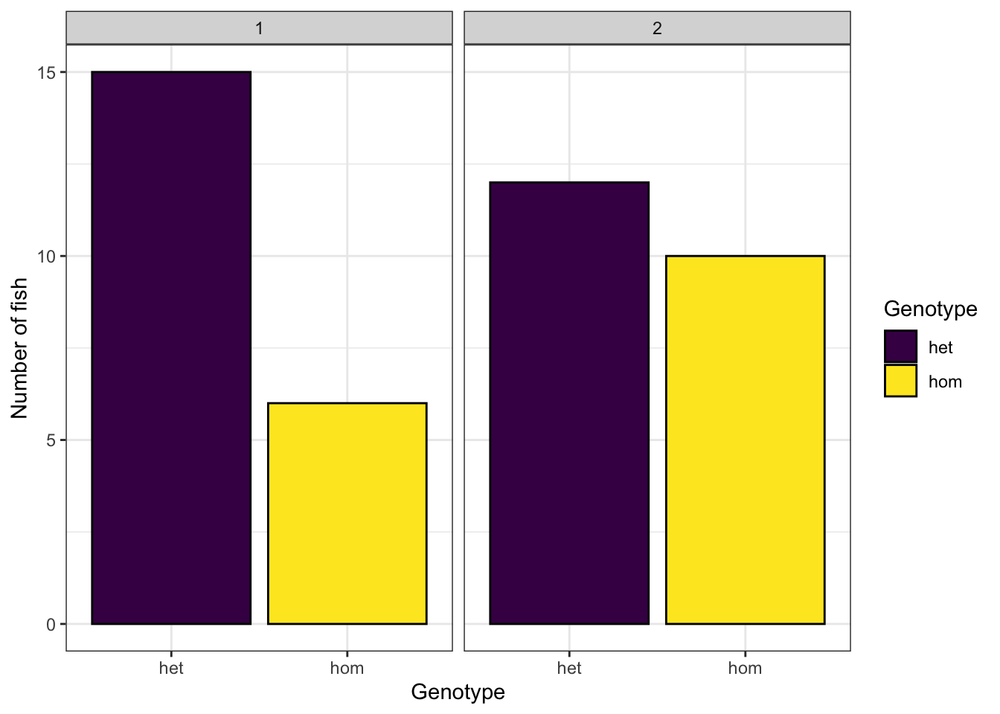
| Version | Author | Date |
|---|---|---|
| 922fb69 | Karissa Barthelson | 2022-08-25 |
Fish were isolated for 60 mins before being placed in the mazes for 1 hour. Raw data was collected, and metadata was recorded (i.e. sex, time of day). These raw data spreadsheets were batch processed in the naglu 5m LT BatchProcess R script to produce the final_data object. This object contains the tetragram frequencies (see below). Note that fish were genotyped after data collection so that we are blinded from any observer bias until after raw data collection. This time, I did not save the videos as it was a bit of a pilot experiment using the LT units. In future, the vids will be recorded.
read_csv("data/raw_data/naglu/5m_LT/ymaze_inLT-20220821T025833.csv",
skip =4, col_names = F) %>%
head(10) %>%
dplyr::select(-X2, -X3) %>%
set_colnames(c("Time", "fish",'enter or exit', "zone")) %>%
kable(caption = "example of raw data") %>%
kable_styling(full_width = F)| Time | fish | enter or exit | zone |
|---|---|---|---|
| 30.548 | 1 | Enter_Zone | 1 |
| 30.548 | 2 | Enter_Zone | 3 |
| 30.548 | 3 | Enter_Zone | 3 |
| 30.548 | 4 | Enter_Zone | 1 |
| 30.548 | 5 | Enter_Zone | 1 |
| 30.548 | 6 | Enter_Zone | 1 |
| 30.548 | 7 | Enter_Zone | 1 |
| 30.548 | 8 | Enter_Zone | 2 |
| 31.420 | 1 | Exit_Zone | 1 |
| 31.420 | 1 | Enter_Zone | 4 |
final_data %>%
head %>%
kable(caption = "Example of the processed data") %>%
kable_styling() | fish_id | bin | LLLL | LLLR | LLRL | LLRR | LRLL | LRLR | LRRL | LRRR | RLLL | RLLR | RLRL | RLRR | RRLL | RRLR | RRRL | RRRR | L | R | total_turns | reps | alts | rel_reps | rel_alts | rel_R | rel_L | Tank | Unit | startTemp | endTemp | start time | Genotype | Sex | comment | Time |
|---|---|---|---|---|---|---|---|---|---|---|---|---|---|---|---|---|---|---|---|---|---|---|---|---|---|---|---|---|---|---|---|---|---|---|---|
| 1 | 1 | 0 | 1 | 1 | 0 | 2 | 1 | 0 | 0 | 2 | 0 | 1 | 0 | 0 | 0 | 0 | 0 | 8 | 3 | 11 | 0 | 2 | 0.000000 | 18.181818 | 27.27273 | 72.72727 | 1 | 139 | 25 | 25 | 1230 | hom | F | NA | 1230 |
| 1 | 2 | 0 | 0 | 1 | 1 | 1 | 4 | 1 | 1 | 0 | 2 | 3 | 2 | 1 | 1 | 1 | 2 | 10 | 14 | 24 | 2 | 7 | 8.333333 | 29.166667 | 58.33333 | 41.66667 | 1 | 139 | 25 | 25 | 1230 | hom | F | NA | 1230 |
| 1 | 3 | 6 | 2 | 1 | 1 | 1 | 4 | 1 | 0 | 3 | 0 | 4 | 0 | 1 | 0 | 0 | 0 | 19 | 8 | 27 | 6 | 8 | 22.222222 | 29.629630 | 29.62963 | 70.37037 | 1 | 139 | 25 | 25 | 1230 | hom | F | NA | 1230 |
| 1 | 4 | 10 | 2 | 4 | 1 | 4 | 1 | 0 | 1 | 1 | 3 | 1 | 0 | 0 | 0 | 1 | 1 | 24 | 9 | 33 | 11 | 2 | 33.333333 | 6.060606 | 27.27273 | 72.72727 | 1 | 139 | 25 | 25 | 1230 | hom | F | NA | 1230 |
| 1 | 5 | 9 | 2 | 1 | 1 | 1 | 1 | 1 | 0 | 2 | 0 | 1 | 0 | 1 | 0 | 0 | 0 | 19 | 4 | 23 | 9 | 2 | 39.130435 | 8.695652 | 17.39130 | 82.60870 | 1 | 139 | 25 | 25 | 1230 | hom | F | NA | 1230 |
| 1 | 6 | 7 | 2 | 2 | 0 | 1 | 0 | 0 | 0 | 2 | 0 | 0 | 0 | 0 | 0 | 0 | 0 | 14 | 3 | 17 | 7 | 0 | 41.176471 | 0.000000 | 17.64706 | 82.35294 | 1 | 139 | 25 | 25 | 1230 | hom | F | NA | 1230 |
First, I will check that genotype proportions are as expected. Less homozygous fish are observed than expected. Is this a survival phenotype?
meta %>%
group_by(Genotype) %>%
mutate(total = n()) %>% # Calculate total number of fish per genotype for the plot
ungroup %>%
ggplot(aes(Genotype )) +
geom_bar(aes(fill = Genotype),
colour = "black") +
geom_label(aes(label = total),
y = 25,
size = 10) +
scale_fill_viridis_d() +
ggtitle("Total number of fish per genotype in the study") 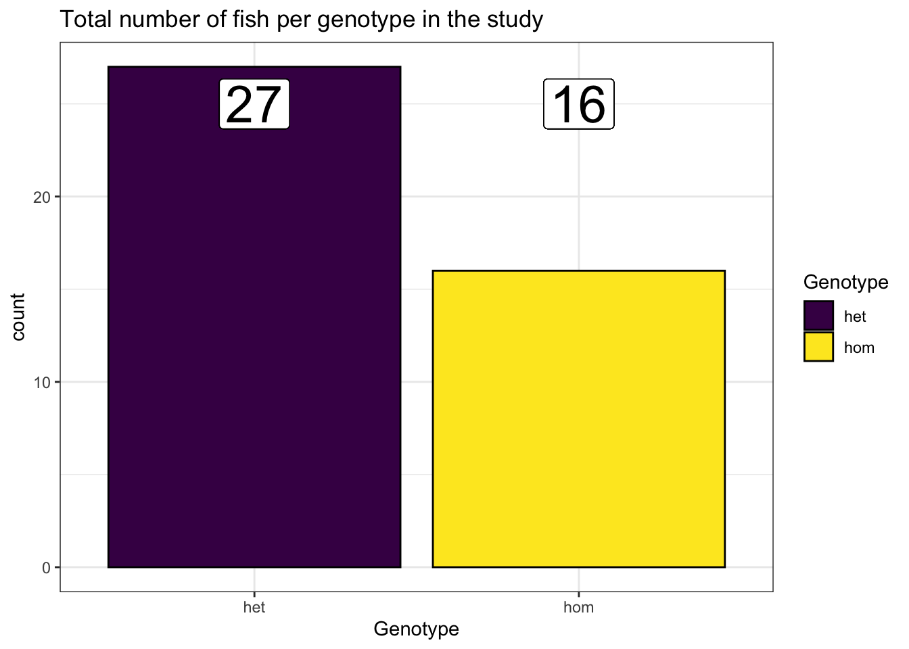
| Version | Author | Date |
|---|---|---|
| 922fb69 | Karissa Barthelson | 2022-08-25 |
The plots below show the raw counts of each of the possible tetragrams. We can see some fish were quite inactive, wih low total number of tetragrams. The plot below show fish 1-5 for vis purposes.
final_data_summedoverbins %>%
dplyr::filter(fish_id %in% c(9, 10)) %>%
ggplot(aes(x = tetras, y = x, fill = tetras)) +
geom_col() +
facet_wrap(~fish_id, ncol = 1) +
labs(y = "Counts of each tetragram",
fill = "Tetragram") +
theme(axis.text.x = element_text(angle = 45, hjust = 1),
legend.position = "none") +
ggtitle("Distribution of memory patterns per fish")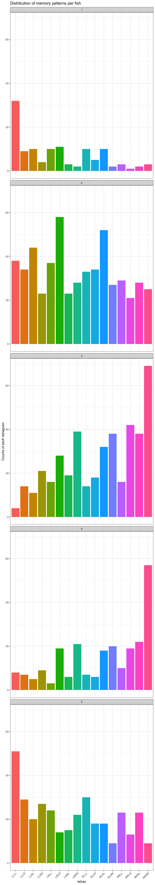
| Version | Author | Date |
|---|---|---|
| 922fb69 | Karissa Barthelson | 2022-08-25 |
Cleal et al. showed that zebrafish naturally perform more of the alternation tetragrams (LRLR and RLRL) in a Y-maze. This is also obsevred in our data here.
final_data_summedoverbins %>%
ggplot(aes(x = tetras, y = x)) +
geom_jitter(aes(colour = tetras,
shape = Sex)) +
geom_boxplot(outlier.shape = NA,
fill = NA
) +
scale_fill_viridis_d() +
labs(y = "Number of tetragrams",
colour = "Tetragram",
x = "Tetragram")+
theme(legend.position = "bottom") +
geom_label_repel(aes(label = fish_id),
data = . %>% # only show the apparent outlier samples
dplyr::filter(x > 500)
) +
ggtitle("Total number of 16 possible tetragrams performed by zebrafish in a Y-maze\nduring a 1 hour search period") 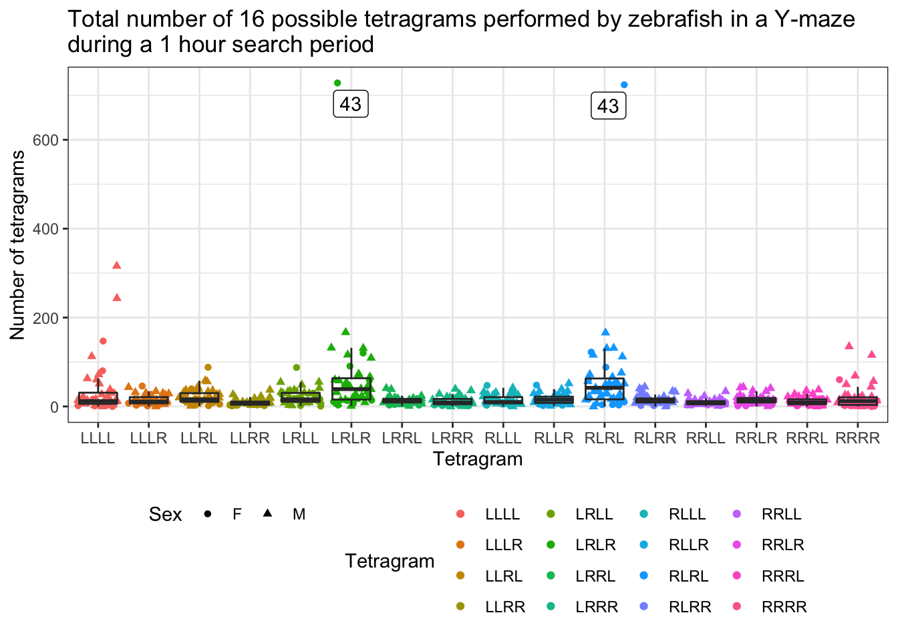
| Version | Author | Date |
|---|---|---|
| 922fb69 | Karissa Barthelson | 2022-08-25 |
It looks like the tracking hasnt worked for fish 43 nicely as it appears to have done a lot more alternation. This is probably an outlier and was omitted. Without this fish, the increased number of tetragrams is more clearly observed.
final_data_summedoverbins %>%
dplyr::filter(!fish_id %in% c(43)) %>%
ggplot(aes(x = tetras, y = x)) +
geom_jitter(aes(colour = tetras,
shape = Sex)) +
geom_boxplot(outlier.shape = NA,
fill = NA
) +
labs(y = "Number of tetragrams",
colour = "Tetragram",
x = "Tetragram")+
theme(legend.position = "bottom") +
ggtitle("Total number of 16 possible tetragrams performed by zebrafish in a Y-maze\nduring a 1 hour search period") 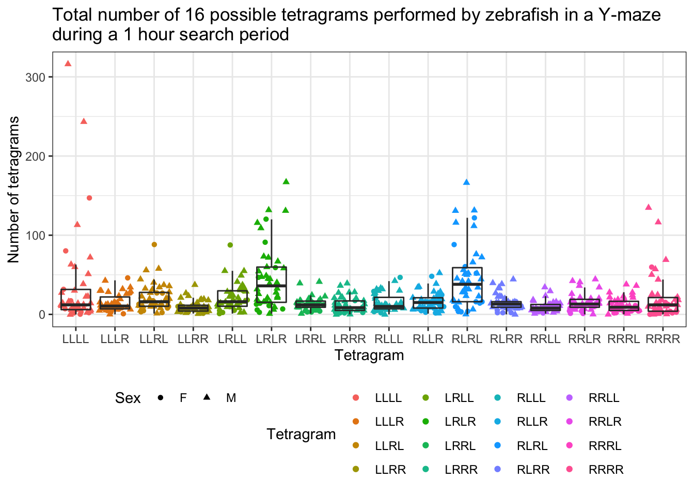
| Version | Author | Date |
|---|---|---|
| 922fb69 | Karissa Barthelson | 2022-08-25 |
# remove the problematic samples
final_data_summedoverbins %<>%
dplyr::filter(!fish_id %in% c(43))
final_data_long %<>%
dplyr::filter(!fish_id %in% c(43))
final_data %<>%
dplyr::filter(!fish_id %in% c(43))We can also overlay the genotype boxplots as shown below. Looks like the homozygous fish perform less alternations than the het fish. I will look into this more later in the analysis
final_data_summedoverbins %>%
ggplot(aes(x = tetras, y = x)) +
geom_jitter(aes(colour = tetras,
shape = Sex)) +
geom_boxplot(outlier.shape = NA,
aes(fill = Genotype) # fill the boxplots by genotype
) +
scale_fill_viridis_d() +
labs(y = "Number of tetragrams",
colour = "Tetragram",
x = "Tetragram")+
theme(legend.position = "bottom") +
ggtitle("Total number of 16 possible tetragrams performed by zebrafish in a Y-maze\nduring a 1 hour search period") 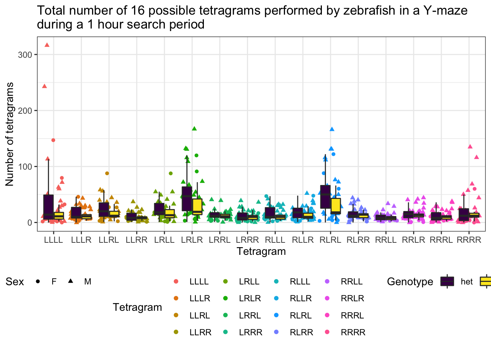
| Version | Author | Date |
|---|---|---|
| 922fb69 | Karissa Barthelson | 2022-08-25 |
The alternation tetragrams are the tetragram of interest (the measure of working memory). Below indicates the total (countas) and relative (proportion) number of tetragrams performed by zebrafish across the 6 x 10 min blocks of the hour they spent in the maze. The homozygous fish definitely appear to be performing less alternations in the final 10 mins of the test.
ggarrange(
final_data_long %>%
dplyr::distinct(rel_alts, .keep_all = T) %>%
ggplot(aes(x = Genotype, y = alts, fill = Genotype)) +
geom_boxplot(outlier.shape = NA) +
geom_jitter(aes(shape = Sex)) +
facet_wrap(~bin, nrow = 1) +
theme(axis.text.x = element_text(angle = 45, hjust = 1, vjust = 1)) +
ylab("Frequency of alternation tetragrams (LRLR + RLRL)") +
scale_fill_viridis_d() +
ggtitle("Total number of alternaions"),
final_data_long %>%
dplyr::distinct(rel_alts, .keep_all = T) %>%
ggplot(aes(x = Genotype, y = rel_alts, fill = Genotype)) +
geom_boxplot(outlier.shape = NA) +
geom_jitter(aes(shape = Sex)) +
facet_wrap(~bin, nrow = 1) +
ylab("Relative alteration frequency (LRLR + RLRL)") +
theme(axis.text.x = element_text(angle = 45, hjust = 1, vjust = 1)) +
scale_fill_viridis_d() +
ggtitle("Relative number of alternations"),
common.legend = TRUE
)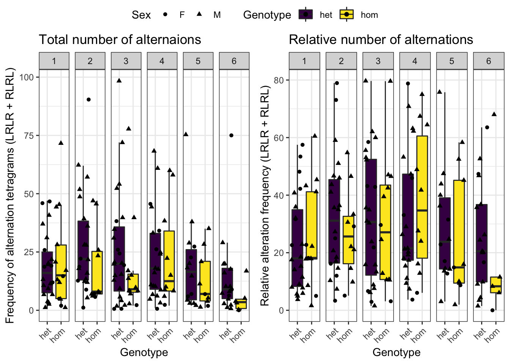
| Version | Author | Date |
|---|---|---|
| 922fb69 | Karissa Barthelson | 2022-08-25 |
Alteration to locomotor activity could be a confounding effect with genotype to alternation (LRLR + RLRL) frequency. If the mutant fish had some form of locomotor change, they could be performing more or less alternation tetragrams not due to impairment of spatial working memory. To account for this, I will test whether the genotype of the fish had a significant effect on 1) the total number of turns the fish performed in the hour spent in the maze or 2) the average time spent in each zone of the maze. Statistical evidence is found for fish in Tank 4 being more active.
final_data_summedoverbins %>%
ungroup() %>%
group_by(fish_id) %>%
mutate(total_turns = sum(x)) %>%
dplyr::select(colnames(meta), total_turns) %>%
unique %>%
ggplot(aes(x = Genotype, y = total_turns)) +
geom_violin(aes(fill = Genotype),
alpha = 0.5) +
geom_boxplot(aes(colour = Genotype),
fill = NA,
outlier.shape = NA,
width = 0.25,
colour= "black") +
# geom_label_repel(aes(label = paste0("fish " , fish_id)),
# fill = NA,
# nudge_x = 0.5,
# data = . %>% dplyr::filter(total_turns > 1100)) +
geom_quasirandom(aes(shape = Sex)) +
scale_fill_viridis_d(option = "viridis") +
scale_colour_viridis_d(option = "viridis") +
labs(y = "Total number of turns",
title = "Total number of turns performed by fish in the Y-maze in 1 hour")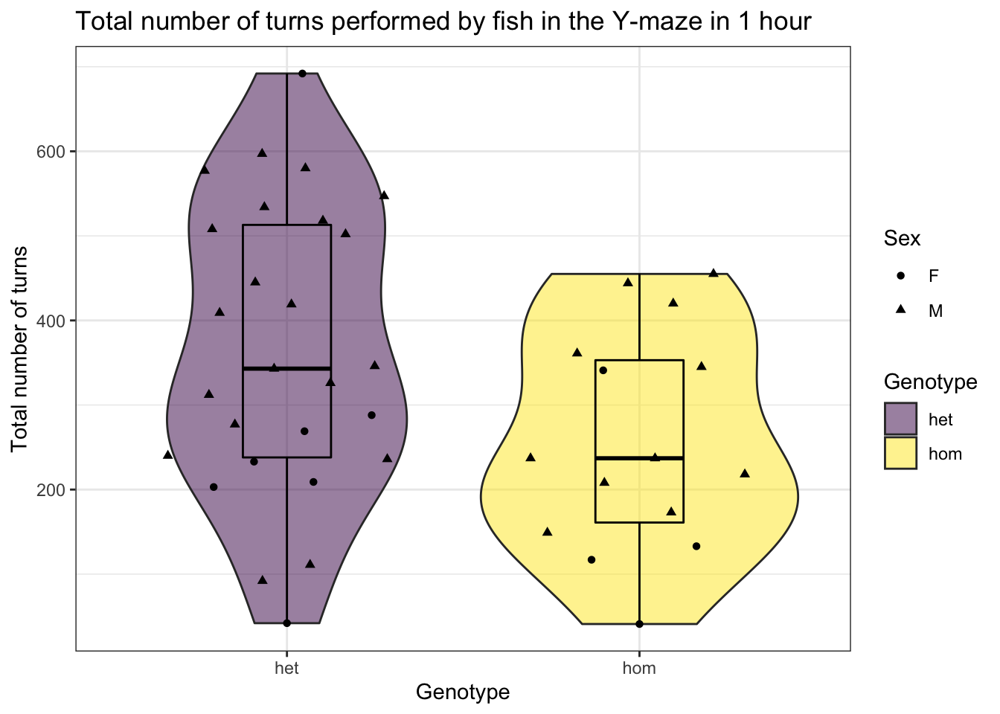
| Version | Author | Date |
|---|---|---|
| 922fb69 | Karissa Barthelson | 2022-08-25 |
I also want to check whether the home tank or sex makes an overall difference to total number of turns. This apparently doesnt.
final_data_summedoverbins %>%
ungroup() %>%
group_by(fish_id) %>%
mutate(total_turns = sum(x)) %>%
dplyr::select(colnames(meta), total_turns) %>%
unique %>%
ggplot(aes(x = Tank, y = total_turns)) +
geom_violin(aes(fill = Tank),
alpha = 0.5) +
geom_boxplot(aes(colour = Tank),
fill = NA,
outlier.shape = NA,
width = 0.25,
colour= "black") +
geom_quasirandom(aes(shape = Genotype)) +
scale_fill_viridis_d(option = "viridis") +
scale_colour_viridis_d(option = "viridis") +
ylab("Total number of turns") +
ggtitle("Total number of turns performed by fish in the Y-maze in 1 hour according to tank")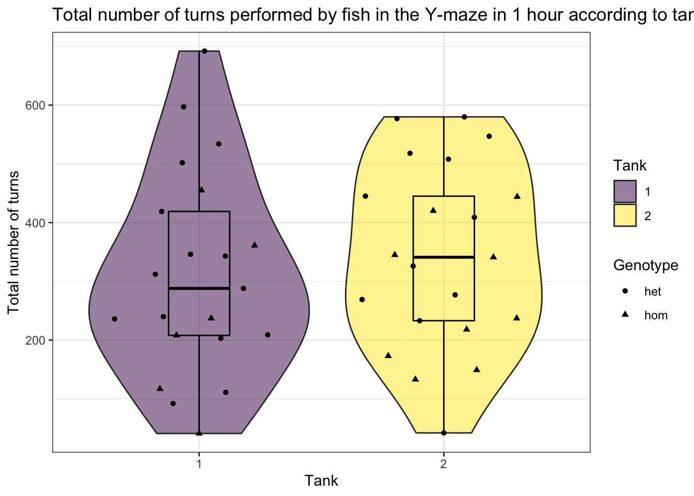
| Version | Author | Date |
|---|---|---|
| 922fb69 | Karissa Barthelson | 2022-08-25 |
final_data_summedoverbins %>%
ungroup() %>%
group_by(fish_id) %>%
mutate(total_turns = sum(x)) %>%
dplyr::select(colnames(meta), total_turns) %>%
unique %>%
ggplot(aes(x = Sex, y = total_turns)) +
geom_violin(aes(fill = Sex),
alpha = 0.5) +
geom_boxplot(aes(colour = Sex),
fill = NA,
outlier.shape = NA,
width = 0.25,
colour= "black") +
geom_quasirandom(aes(shape = Genotype)) +
scale_fill_viridis_d(option = "viridis") +
scale_colour_viridis_d(option = "viridis") +
ylab("Total number of turns") +
ggtitle("Total number of turns performed by fish in the Y-maze in 1 hour according to Sex")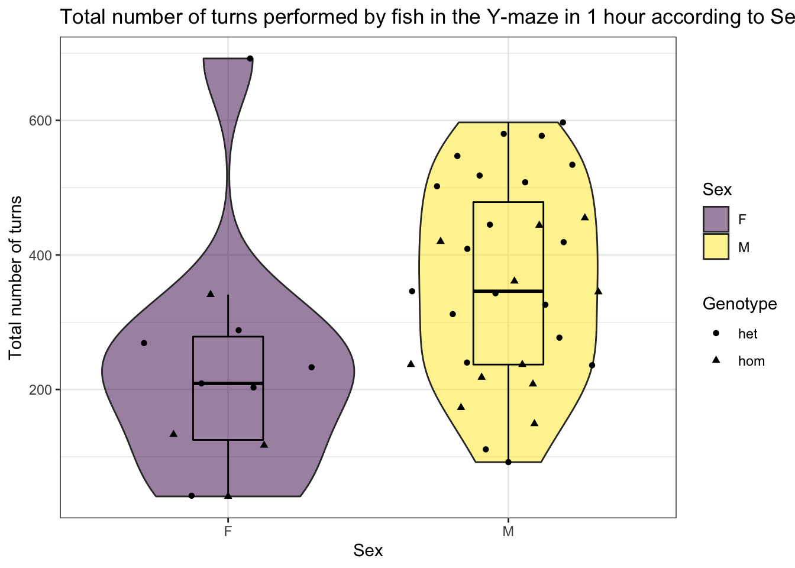
| Version | Author | Date |
|---|---|---|
| 922fb69 | Karissa Barthelson | 2022-08-25 |
To test whether Genotype, Sex or Tank has a significant effect ont he total number of turns, I used a negative binomial model. The coefficients are found below. Sex also has a significant difference, but this could be because there are much less females. We havent seen the effect of sec before and so I’m not reading into this result too much.
final_data_summedoverbins %>%
ungroup() %>%
group_by(fish_id) %>%
mutate(total_turns = sum(x)) %>%
dplyr::select(colnames(meta), total_turns) %>%
unique %>%
glm.nb(total_turns ~ Genotype + Sex + Tank,
data = .) %>%
summary %>%
.$coef %>%
set_colnames(c(colnames(.)[1:3], "pvalue")) %>% #
kable(caption = "Negative binomial GLM model coefficients.
Genotype has a significant effect on the total number of turns" ) %>%
kable_styling() %>%
row_spec(row = 2, background = "salmon", bold = T)| Estimate | Std. Error | z value | pvalue | |
|---|---|---|---|---|
| (Intercept) | 5.5161995 | 0.1746438 | 31.5854330 | 0.0000000 |
| Genotypehom | -0.3806306 | 0.1640191 | -2.3206475 | 0.0203059 |
| SexM | 0.4380136 | 0.1771475 | 2.4725925 | 0.0134137 |
| Tank2 | 0.1074479 | 0.1572938 | 0.6831033 | 0.4945416 |
I next want to look at the activity of zebrafish across the time bins. The homs seem to be doing much less in the final bin.
final_data %>%
dplyr::select(colnames(meta), bin, total_turns) %>%
ggplot(aes(x = Genotype, y = total_turns)) +
geom_violin(aes(fill = Genotype),
alpha = 0.5) +
facet_wrap(~bin, nrow = 1) +
geom_boxplot(aes(colour = Genotype),
fill = NA,
outlier.shape = NA,
width = 0.25,
colour= "black") +
geom_quasirandom(aes(shape = Genotype)) +
scale_fill_viridis_d(option = "viridis") +
scale_colour_viridis_d(option = "viridis") +
ylab("Total number of turns") +
theme(legend.position = "top") +
ggtitle("Total number of turns performed by fish in the Y-maze across an hour")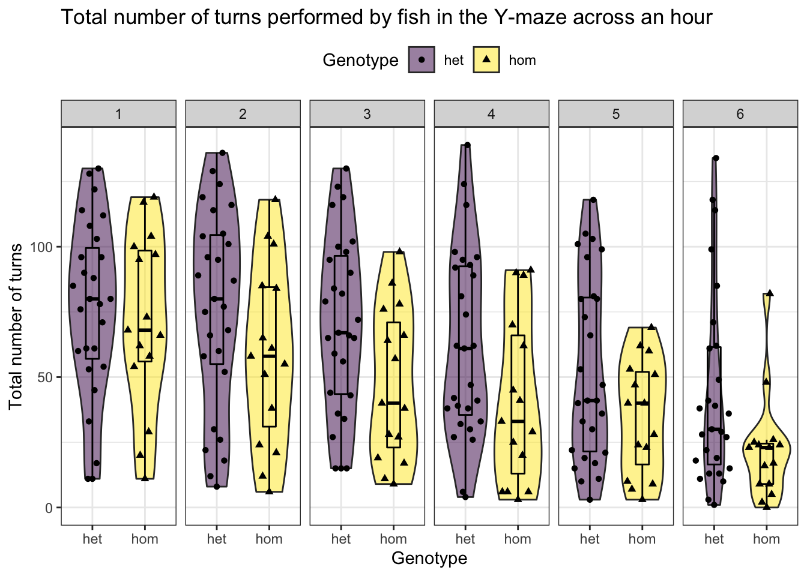
| Version | Author | Date |
|---|---|---|
| 922fb69 | Karissa Barthelson | 2022-08-25 |
final_data_long %>%
dplyr::select(colnames(meta), bin, total_turns) %>%
mutate(bin = as.factor(bin)) %>%
unique %>%
glm.nb(total_turns ~ (bin + Genotype)^2 + Sex ,
data = .) %>%
summary %>%
.$coef %>%
set_colnames(c(colnames(.)[1:3], "pvalue")) %>% #
kable(caption = "Negative binomial GLM model coefficients") %>%
kable_styling() %>%
row_spec(row = 13, background = "#ff78b2", bold = T)| Estimate | Std. Error | z value | pvalue | |
|---|---|---|---|---|
| (Intercept) | 4.0131364 | 0.1469207 | 27.3149743 | 0.0000000 |
| bin2 | 0.0126747 | 0.1812600 | 0.0699258 | 0.9442527 |
| bin3 | -0.0837805 | 0.1813977 | -0.4618610 | 0.6441810 |
| bin4 | -0.2040994 | 0.1815889 | -1.1239640 | 0.2610283 |
| bin5 | -0.3468704 | 0.1818474 | -1.9074808 | 0.0564584 |
| bin6 | -0.5461070 | 0.1822747 | -2.9960651 | 0.0027349 |
| Genotypehom | -0.0684930 | 0.2146474 | -0.3190954 | 0.7496542 |
| SexM | 0.4162638 | 0.0965824 | 4.3099357 | 0.0000163 |
| bin2:Genotypehom | -0.2086028 | 0.3038894 | -0.6864433 | 0.4924336 |
| bin3:Genotypehom | -0.3360264 | 0.3044556 | -1.1036959 | 0.2697251 |
| bin4:Genotypehom | -0.3724381 | 0.3049781 | -1.2211963 | 0.2220117 |
| bin5:Genotypehom | -0.3796510 | 0.3055866 | -1.2423681 | 0.2141008 |
| bin6:Genotypehom | -0.6088631 | 0.3075765 | -1.9795504 | 0.0477541 |
Another factor to keep in mind is if the fish had a preference (or aversion) to a particular arm of the maze, this would influence the number of alternations they would perform without the use of spatial working memory. Therefore, I will asses the time they spend in each zone of the maze. No significant effects are observed.
read_csv("data/processed_data/naglu/5m_LT/time_in_zone.csv") %>%
mutate(fish_id = as.character(fish_id)) %>%
dplyr::select(fish_id, bin, zone, time_in_zone) %>%
left_join(meta) %>%
# omit the problematic fish
dplyr::filter(fish_id != "43") %>%
dplyr::filter(fish_id != "48") %>%
dplyr::filter(Genotype != "NA") %>%
group_by(fish_id, zone) %>%
mutate(total_timeInZone = sum(time_in_zone)) %>%
dplyr::distinct(total_timeInZone, .keep_all = TRUE) %>%
ggplot(aes(x = Genotype, y = total_timeInZone/60)) +
geom_quasirandom(aes(shape = Sex)
) +
geom_boxplot(aes(fill = Genotype),
outlier.shape = NA,
alpha = 0.5) +
facet_wrap(~zone, nrow = 1) +
scale_y_log10() +
ylab("Total time spent in each zone (mins, log scale)") +
scale_fill_viridis_d() +
ggtitle("Total time spent in each zone") 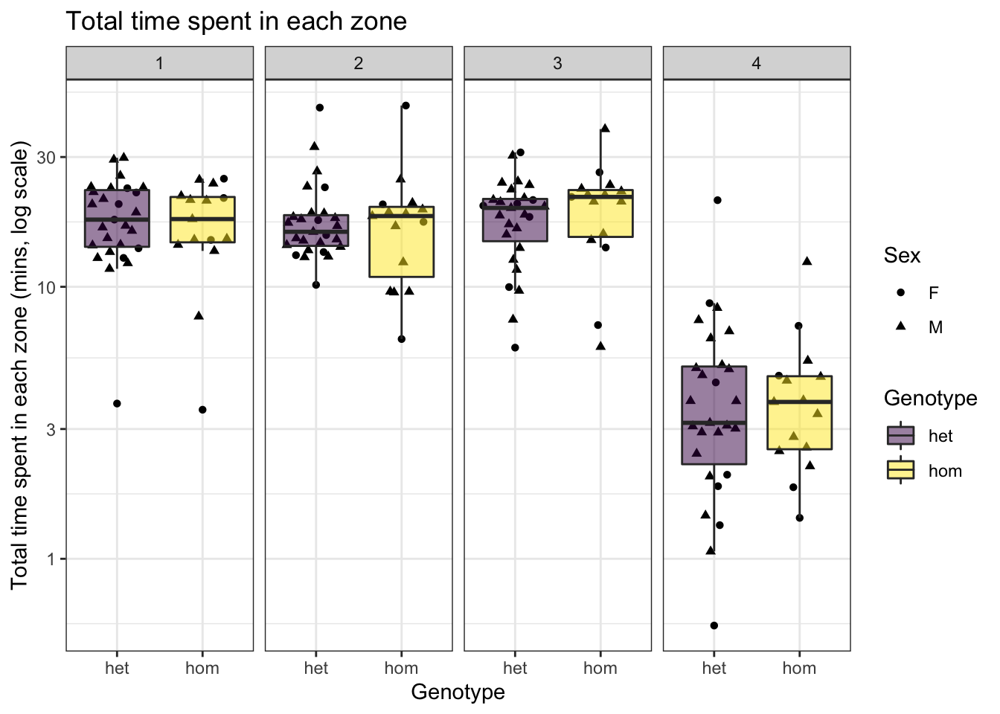
| Version | Author | Date |
|---|---|---|
| 922fb69 | Karissa Barthelson | 2022-08-25 |
read_csv("data/processed_data/naglu/5m_LT/time_in_zone.csv") %>%
mutate(fish_id = as.character(fish_id)) %>%
dplyr::select(fish_id, bin, zone, time_in_zone) %>%
left_join(meta) %>%
dplyr::filter(fish_id != "43") %>%
dplyr::filter(Genotype != "NA") %>%
group_by(fish_id, zone) %>%
mutate(aveTimeInZone = mean(time_in_zone)) %>%
dplyr::distinct(aveTimeInZone, .keep_all = TRUE) %>%
ggplot(aes(x = Genotype, y = aveTimeInZone)) +
geom_quasirandom(aes(shape=Sex)
) +
geom_boxplot(aes(fill = Genotype),
outlier.shape = NA,
alpha = 0.5) +
facet_wrap(~zone, nrow = 1) +
scale_fill_viridis_d() +
scale_y_log10() +
ylab("Average time spent in each zone (seconds, log scale") +
ggtitle("Average time spent in each zone")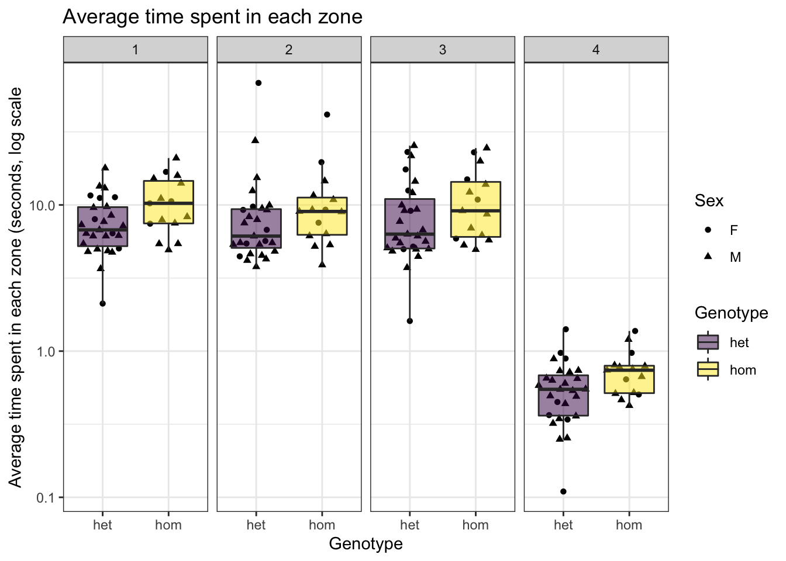
| Version | Author | Date |
|---|---|---|
| 922fb69 | Karissa Barthelson | 2022-08-25 |
read_csv("data/processed_data/naglu/5m_LT/time_in_zone.csv") %>%
mutate(fish_id = as.character(fish_id)) %>%
dplyr::select(fish_id, bin, zone, time_in_zone) %>%
left_join(meta) %>%
dplyr::filter(fish_id != "43") %>%
dplyr::filter(fish_id != "48") %>%
group_by(fish_id, zone) %>%
mutate(aveTimeInZone = mean(time_in_zone)) %>%
dplyr::distinct(aveTimeInZone, .keep_all = TRUE) %>%
ggplot(aes(x = Tank, y = aveTimeInZone)) +
geom_quasirandom(aes(shape=Genotype)
) +
geom_boxplot(aes(fill = Tank),
outlier.shape = NA,
alpha = 0.5) +
facet_wrap(~zone, nrow = 1) +
scale_fill_viridis_d() +
scale_y_log10() +
ylab("Average time spent in each zone (seconds, log scale") +
ggtitle("Average time spent in each zone")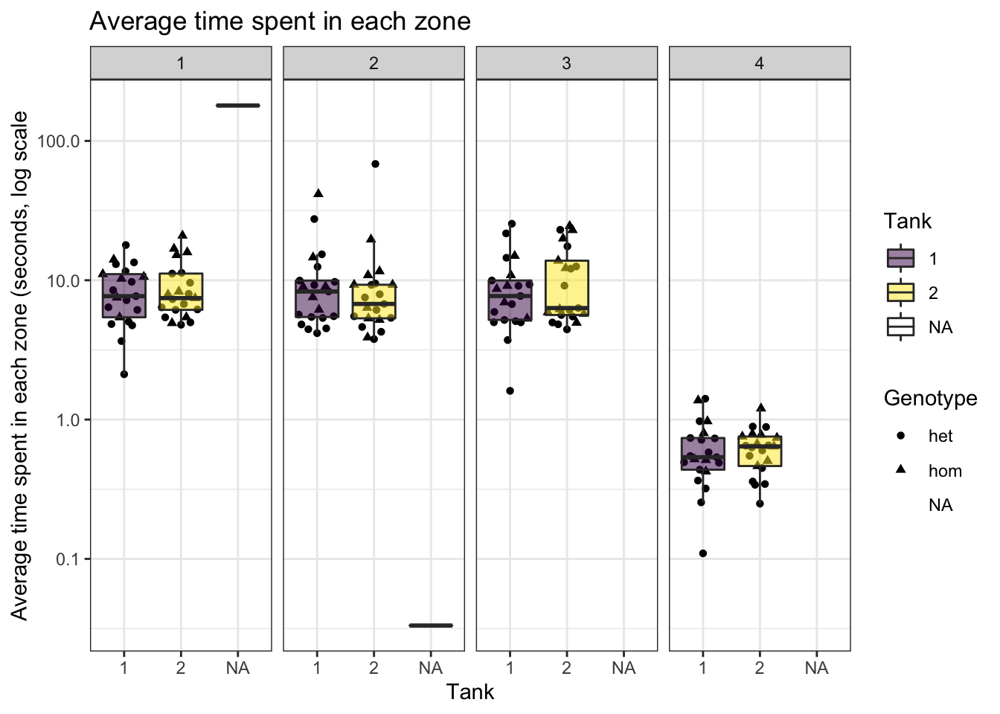
| Version | Author | Date |
|---|---|---|
| 922fb69 | Karissa Barthelson | 2022-08-25 |
read_csv("data/processed_data/naglu/5m_LT/time_in_zone.csv") %>%
mutate(fish_id = as.character(fish_id)) %>%
dplyr::select(fish_id, bin, zone, time_in_zone) %>%
left_join(meta) %>%
dplyr::filter(fish_id != "43") %>%
dplyr::filter(fish_id != "48") %>%
dplyr::filter(Genotype != "NA") %>%
group_by(fish_id, zone) %>%
mutate(aveTimeInZone = mean(time_in_zone)) %>%
dplyr::distinct(aveTimeInZone, .keep_all = TRUE) %>%
lm(log(aveTimeInZone) ~ (Genotype + zone)^2 + Sex + Tank,
data = .) %>%
summary %>%
.$coef %>%
kable(caption = "linear model: log(average time in zone) ~ (Genotype + zone)^2 + Sex + Tank") %>%
kable_styling() %>%
row_spec(row = 3, bold = T, color = "black", background = "lightblue")| Estimate | Std. Error | t value | Pr(>|t|) | |
|---|---|---|---|---|
| (Intercept) | 3.4191379 | 0.2549978 | 13.4084999 | 0.0000000 |
| Genotypehom | 0.2649625 | 0.3647518 | 0.7264186 | 0.4686305 |
| zone | -0.7905683 | 0.0794432 | -9.9513608 | 0.0000000 |
| SexM | -0.1636461 | 0.1622322 | -1.0087150 | 0.3146156 |
| Tank2 | 0.0195200 | 0.1442649 | 0.1353063 | 0.8925377 |
| Genotypehom:zone | 0.0060906 | 0.1329340 | 0.0458169 | 0.9635126 |
Fontana et al. 2019 showed that fish sometimes show a behavioral lateralisation (i.e. handedness). If fish show this, then they would perform less alternation tetragrams not due to working memory. Here, we defne zebrafish as showing a laterality if they perform left or right turns more than 60% of the total turns. Indeed, some zebrafish show a preference for L or R turns. However, it is not significantly to be related to genotype.
# make the LR bias object
LR_Bias <- final_data %>%
dplyr::select(L, R, total_turns, fish_id) %>%
group_by(fish_id) %>%
mutate(L = sum(L),
R = sum(R),
total_turns = sum(total_turns),
L_R_bias = case_when( #consider more than 60% of the time performing a left or right turn to be a bias
L/total_turns > 0.6 ~ "Left",
R/total_turns > 0.6 ~ "Right",
TRUE ~ "Neither"
)) %>%
dplyr::select(fish_id, L_R_bias) %>%
unique() %>%
mutate(L_R_bias = factor(L_R_bias,
levels = c("Neither", "Left", "Right"))
)
final_data %>%
left_join(LR_Bias) %>%
group_by(fish_id) %>%
mutate(L = sum(L),
R = sum(R),
total_turns = sum(total_turns)
) %>%
ggplot(aes(L, R)) +
geom_point(aes(colour = L_R_bias, shape = Genotype),
size = 3) +
geom_abline(slope = 1, colour = "grey50") +
scale_color_manual(values = c(viridis_pal(end=0.75)(3),
rep("black", 3))
) +
geom_mark_ellipse(aes(colour = L_R_bias,
label = L_R_bias),
alpha = 0.5) +
scale_x_continuous(limits = c(0,500)) +
scale_y_continuous(limits = c(0,500)) +
labs(title = "Left vs Right turns performed by zebrafish ")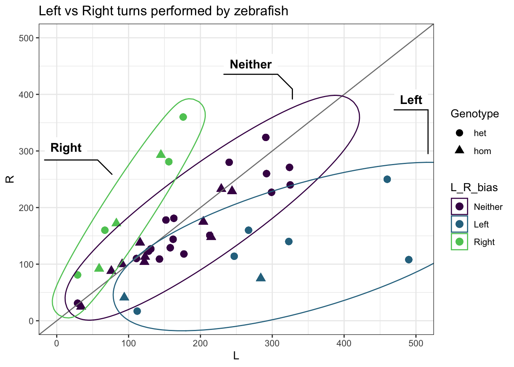
LR_Bias %>%
left_join(meta) %>%
ungroup() %>%
group_by(Genotype, L_R_bias) %>%
dplyr::select(L_R_bias, Genotype) %>%
summarise(n = n()) %>%
spread(key = "Genotype", value = "n") %>%
column_to_rownames("L_R_bias") %>%
chisq.test() %>%
tidy() %>%
mutate(p.value = signif(p.value, 2),
statistic = signif(statistic, 2)
) %>%
kable(caption = "Chi-square test of Genotype ~ LR Bias") %>%
kable_styling(full_width = F)| statistic | p.value | parameter | method |
|---|---|---|---|
| 0.58 | 0.75 | 2 | Pearson’s Chi-squared test |
Finally, I will now test for alternation changes using a generlatised linear mixed effect model (beta-binomial distribution). We use this because it is count data which is over-dispersed, and fixed and random effects are included. The link function is logit. The fixed effects are:
Random effect is fish_id to account for repeated measures in the bin:genotype interaction effect.
Visualisation of the model predicted effects is found below.
glm <-
final_data %>%
droplevels() %>%
left_join(LR_Bias) %>%
mutate(
non_alts = total_turns - alts,
bin = as.factor(bin)
) %>%
glmmTMB(
cbind(alts, non_alts) ~ (bin + Genotype)^2 + Time + Sex + Tank + L_R_bias + (1|fish_id),
family = betabinomial(),
data = .
)
an <- Anova(glm) %>%
as.data.frame()
an %>%
dplyr::rename(pval = `Pr(>Chisq)`) %>%
kable(caption = "GLM coefs ") %>%
kable_styling() %>%
row_spec(row = c(2), bold = T, color = "black", background = "lightblue")| Chisq | Df | pval | |
|---|---|---|---|
| bin | 16.3758912 | 5 | 0.0058489 |
| Genotype | 0.2570886 | 1 | 0.6121274 |
| Time | 47.3690108 | 5 | 0.0000000 |
| Sex | 0.1011420 | 1 | 0.7504635 |
| Tank | 0.0031536 | 1 | 0.9552169 |
| L_R_bias | 11.2774311 | 2 | 0.0035574 |
| bin:Genotype | 1.9490526 | 5 | 0.8561487 |
The effect of genotype does not reach the threshold for statistcial significance (p < 0.05).
summary(emmeans(glm, specs = "Genotype"), type = "response") %>%
as_tibble() %>%
mutate(Genotype = case_when(Genotype == "wt" ~ "+/+",
Genotype == "het" ~ "A603fs/+",
Genotype == "hom" ~ "A603fs/A603fs")) %>%
ggplot(aes(Genotype, prob, colour = Genotype)) +
geom_point(size = 5,
position = position_dodge(width = 0.5)) +
geom_errorbar(aes(ymin = lower.CL, ymax = upper.CL),
width = 0.25,
size = 1,
position = position_dodge(width = 0.5)) +
geom_col(aes(fill = Genotype),
alpha = 0.5)+
labs(y = "Estimated probability of alternation",
x = "Time interval",
title = "GLM predicted probability of zebrafish performing an alternation\ntetragram at 5 months of age in LT Units",
subtitle = paste0("Effect of Genotype from GLM: ",signif(an["Genotype","Pr(>Chisq)"], digits = 2)
)
) +
scale_y_continuous(limits = c(0,0.28)) +
theme(axis.text.x = element_text(hjust = 1,
vjust = 1,
angle = 45)) +
scale_color_viridis_d(end = 0.5, option = "inferno") +
scale_fill_viridis_d(end = 0.5, option = "inferno")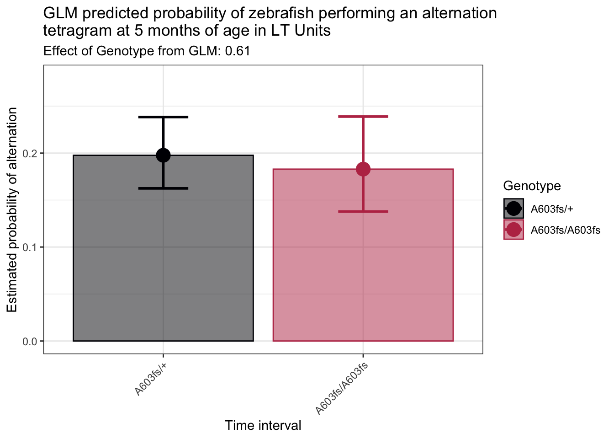
| Version | Author | Date |
|---|---|---|
| 922fb69 | Karissa Barthelson | 2022-08-25 |
While there appears to be a bit of differences between the genotypes. The effect is not significant overall. I think this may be partially driven by the increased number of degrees of freedom in this effect, and the mostly overlapping condifence intervals errorbars.
summary(emmeans(glm, specs = "bin", by = "Genotype"), type = "response") %>%
as_tibble() %>%
mutate(timeinterval = case_when(
bin == 1 ~ "0 - 10 mins",
bin == 2 ~ "10 - 20 mins",
bin == 3 ~ "20 - 30 mins",
bin == 4 ~ "30 - 40 mins",
bin == 5 ~ "40 - 50 mins",
bin == 6 ~ "50 - 60 mins"
)) %>%
ggplot(aes(timeinterval, prob, colour = Genotype, group = Genotype)) +
geom_point(size = 2,
position = position_dodge(width = 0.5)) +
# geom_line(position = position_dodge(width = 0.5)) +
geom_col(aes(fill = Genotype),
position = position_dodge(width = 0.5),
width = 0.5,
alpha = 0.5)+
geom_errorbar(
aes(ymin = lower.CL, ymax = upper.CL),
width = 0.5,
position = position_dodge(width = 0.5)
) +
scale_y_continuous(limits = c(0, 0.4)) +
theme(
axis.text.x = element_text(hjust = 1,
vjust = 1,
angle = 45)
) +
scale_color_viridis_d(end = 0.5, option = "inferno") +
scale_fill_viridis_d(end = 0.5, option = "inferno") +
labs(y = "Estimated probability of \nalternation",
x = "Time interval",
title = "GLM predicted probability of zebrafish performing an alternation\ntetragram across the 6x10 min bins",
subtitle = paste0("Effect of bin:Genotype from GLM: ",
signif(an["bin:Genotype","Pr(>Chisq)"], digits = 2)
)
)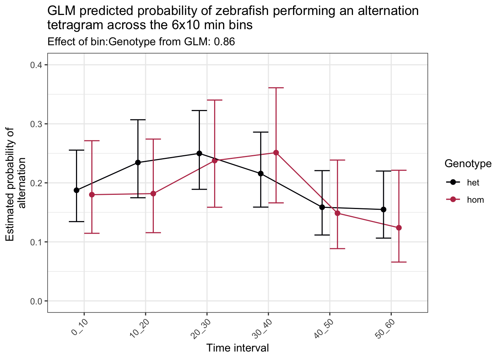
There is a clear effect of whether the fish have a left or right turn bias on the number of alternations it performs. This supports the use of the L_R_Bias factor in the model.
summary(emmeans(glm, specs = "L_R_bias"), type = "response") %>%
as_tibble() %>%
ggplot(aes(L_R_bias, prob, colour = L_R_bias)) +
geom_point(size = 5,
position = position_dodge(width = 0.5)) +
geom_col(aes(fill = L_R_bias),
alpha = 0.5) +
geom_errorbar(
aes(ymin = lower.CL, ymax = upper.CL),
width = 0.25,
size = 1,
position = position_dodge(width = 0.25)
) +
theme(
axis.text.x = element_text(hjust = 1,
vjust = 1,
angle = 45),
legend.position = "none"
) +
scale_color_viridis_d(end = 0.7, option = "viridis") +
scale_fill_viridis_d(end = 0.7, option = "viridis") +
labs(title = "GLM predicted probability of zebrafish performing an alternation\ntetragram due to having a L or R bias",
subtitle = paste0("P-value of effect from GLM: ",
signif(an["L_R_bias","Pr(>Chisq)"], digits = 2)
),
y = "Estimated probability of alternation",
x = "Left or Right bias"
)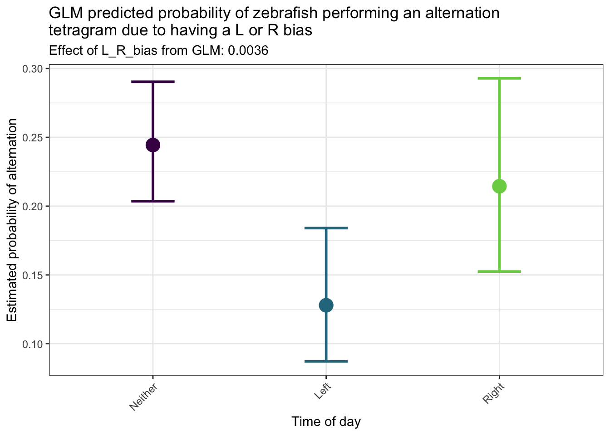
Sex does not have an effect on how many alternations the fish perform.
summary(emmeans(glm, specs = "Sex"), type = "response") %>%
as_tibble() %>%
ggplot(aes(Sex, prob, colour = Sex)) +
geom_point(size = 5,
position = position_dodge(width = 0.5)) +
geom_col(aes(fill = Sex),
alpha = 0.5) +
geom_errorbar(
aes(ymin = lower.CL, ymax = upper.CL),
width = 0.25,
size = 1,
position = position_dodge(width = 0.25)
) +
ylab("Estimated probability of alternation") +
xlab("Time of day") +
theme(
axis.text.x = element_text(hjust = 1,
vjust = 1,
angle = 45),
legend.position = "none"
) +
scale_color_viridis_d(end = 0.7, option = "mako") +
scale_fill_viridis_d(end = 0.7, option = "mako") +
labs(title = "GLM predicted probability of zebrafish performing an alternation\ntetragram due to sex",
subtitle = paste0("Effect of Sex from GLM: ",
signif(an["Sex","Pr(>Chisq)"], digits = 2)),
y = "Estimated probability of alternation",
x = "Sex")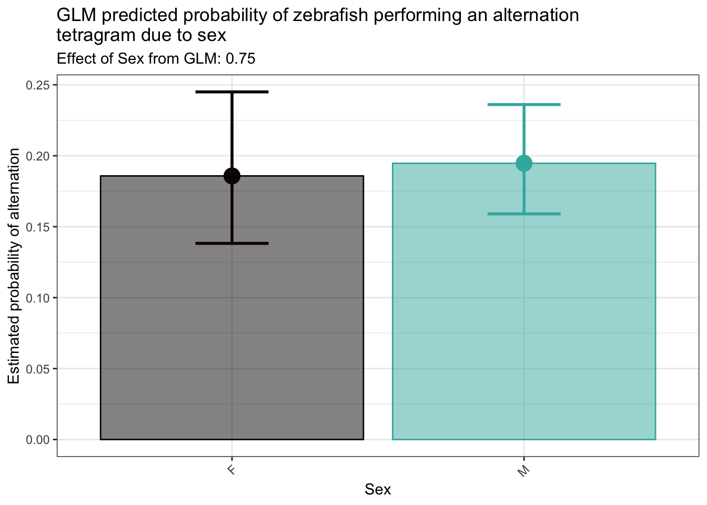
5 month old zebrafish homozygous for the naglu A603fs mutation the same number of alternations than their heterozygous type siblings. However, they appear to travel less distance than their het siblings. Is this indicative of a neurodegenerative phenotype?
# export data
saveRDS(glm, "data/R objects/naglu5m.rds")
sessionInfo()R version 4.0.2 (2020-06-22)
Platform: x86_64-apple-darwin17.0 (64-bit)
Running under: macOS Mojave 10.14.3
Matrix products: default
BLAS: /Library/Frameworks/R.framework/Versions/4.0/Resources/lib/libRblas.dylib
LAPACK: /Library/Frameworks/R.framework/Versions/4.0/Resources/lib/libRlapack.dylib
locale:
[1] en_AU.UTF-8/en_AU.UTF-8/en_AU.UTF-8/C/en_AU.UTF-8/en_AU.UTF-8
attached base packages:
[1] stats graphics grDevices utils datasets methods base
other attached packages:
[1] MASS_7.3-54 glmmTMB_1.1.1 emmeans_1.6.1 car_3.0-11
[5] carData_3.0-4 performance_0.7.2 lme4_1.1-27.1 Matrix_1.3-4
[9] broom_0.7.8 kableExtra_1.3.4 ggrepel_0.9.1 ggforce_0.3.3
[13] ggbeeswarm_0.6.0 ggfortify_0.4.12 ggeasy_0.1.3 ggpubr_0.4.0
[17] scales_1.1.1 here_1.0.1 readxl_1.3.1 magrittr_2.0.1
[21] forcats_0.5.1 stringr_1.4.0 dplyr_1.0.7 purrr_0.3.4
[25] readr_1.4.0 tidyr_1.1.3 tibble_3.1.2 ggplot2_3.3.5
[29] tidyverse_1.3.1
loaded via a namespace (and not attached):
[1] TH.data_1.0-10 minqa_1.2.4 colorspace_2.0-2
[4] ggsignif_0.6.2 ellipsis_0.3.2 rio_0.5.27
[7] rprojroot_2.0.2 estimability_1.3 fs_1.5.0
[10] rstudioapi_0.13 farver_2.1.0 fansi_0.5.0
[13] mvtnorm_1.1-2 lubridate_1.7.10 xml2_1.3.2
[16] codetools_0.2-18 splines_4.0.2 knitr_1.33
[19] polyclip_1.10-0 jsonlite_1.7.2 workflowr_1.6.2
[22] nloptr_1.2.2.2 dbplyr_2.1.1 compiler_4.0.2
[25] httr_1.4.2 backports_1.2.1 assertthat_0.2.1
[28] cli_3.0.0 later_1.2.0 tweenr_1.0.2
[31] htmltools_0.5.1.1 tools_4.0.2 coda_0.19-4
[34] gtable_0.3.0 glue_1.4.2 Rcpp_1.0.7
[37] cellranger_1.1.0 jquerylib_0.1.4 vctrs_0.3.8
[40] svglite_2.0.0 nlme_3.1-152 insight_0.14.2
[43] xfun_0.24 openxlsx_4.2.4 rvest_1.0.0
[46] lifecycle_1.0.0 rstatix_0.7.0 zoo_1.8-9
[49] hms_1.1.0 promises_1.2.0.1 sandwich_3.0-1
[52] TMB_1.7.20 yaml_2.2.1 curl_4.3.2
[55] gridExtra_2.3 sass_0.4.0 stringi_1.6.2
[58] highr_0.9 boot_1.3-28 zip_2.2.0
[61] rlang_0.4.11 pkgconfig_2.0.3 systemfonts_1.0.2
[64] evaluate_0.14 lattice_0.20-44 labeling_0.4.2
[67] cowplot_1.1.1 tidyselect_1.1.1 plyr_1.8.6
[70] R6_2.5.0 generics_0.1.0 multcomp_1.4-17
[73] DBI_1.1.1 pillar_1.6.1 haven_2.4.1
[76] whisker_0.4 foreign_0.8-81 withr_2.4.2
[79] survival_3.2-11 abind_1.4-5 modelr_0.1.8
[82] crayon_1.4.1 utf8_1.2.1 rmarkdown_2.9
[85] grid_4.0.2 data.table_1.14.0 git2r_0.28.0
[88] reprex_2.0.0 digest_0.6.27 webshot_0.5.2
[91] xtable_1.8-4 numDeriv_2016.8-1.1 httpuv_1.6.1
[94] munsell_0.5.0 beeswarm_0.4.0 viridisLite_0.4.0
[97] vipor_0.4.5 bslib_0.2.5.1